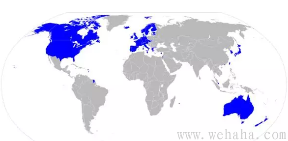

赞助商

Copyright www.wehaha.com Rights Reserved. 闽ICP备12016244号 广告联系QQ:648721038
Powered by DollarFans.com财迷开写到现在半年有余，业已发布文章数十，大致都是经济凛冬将至，国内经济大幅下行趋势明显，收入水平冰火两重，危机将至，早做准备云云。不少看官表示读了财迷文章心情沉重，然而这正是财迷的目的。财迷开这个网址，主要就是帮助大家在理财和其他方面进行风险控制，如果还要天天只当喜鹊，不做渡鸦，那各位读者不用来关注财迷，出门左转有各种鸡汤文情感类公号自助餐，还有西西AV人日国社各种大食堂，自行选择即可。财迷就想提醒一句：凛冬该来还是会来的，这不以人的意志为转移，早作准备，至少会少损失一点，不是么？
事实是那样，财迷无法改变。但就财迷自身情感来说，讲了一堆负面信息，还是很愿意来一点正能量的。看官或许会问财迷有没有什么建设性的建议。财迷不揣浅薄，确实也在思索这个问题。现在就想写一两篇文章，讲一讲自己的思路。出于某些考虑，财迷决定换一个形式讲。

上图为国际货币基金组织认定的世界发达经济体的图，大家可以看到，这么大的一个世界，发达经济体所占的比例其实不大。全世界226个国家和地区，能成为发达经济体的其实也就20多个，而这些国家大部分都是基督教/犹太教国家：西欧各国（英法德意）/北欧各国、美国和加拿大、澳大利亚和新西兰，以及以色列。只有东亚这四小龙和日本是另外一种文化。
窃以为东亚各个国家和地区（日韩港台新）其实是为数不多的可以和西方基督教经济体比肩的经济体。因为这些东亚经济体既不像北美澳洲那样地广人稀，也没有经历过欧洲国家在殖民地时期的原始积累，完全靠着人民勤劳的双手突破了中等收入陷阱，成为了发达国际和地区。其实南美各国、非洲部分国家、东南亚部分国家在资源和人口的优势上都不输给日韩港台新，但是却在进军发达国家的路上纷纷倒下。甚至比如阿根廷和南非曾一度进入发达国家行列，却又被挤了出来。所以日韩港台新实属不易。不是他们多优秀，都是同行们衬托得好，见下图：
而中国如果真要想进入发达国家行列，向东亚国家借鉴经验恐怕更为合适，毕竟是同一个文化圈。实际上，这些国家和地区都长期受到中华文化影响，只是更靠海罢了。
而日韩港台新中，当之无愧的老大是日本，无论在哪个排行榜，日本永远在发达国家之列。G7中日本是唯一的亚洲国家。在1945年战败的时候，日本在战场上死亡了310万人，900万人因为美军轰炸无家可归，全社会财富损失了38%，工矿业水平下降了92.4%。外贸基本断绝，失业者达到1300万，如果不是美帝支援至少会有好几百万人会活活饿死。而二战后，尤其是在1956-1973年，日本工业生产年平均增长率达13.6％，国民生产总值占资本主义世界的比重、在资本主义世界的地位从第6跃升成为仅次于美国的第二经济大国，因此被西方学者认为创造了资本主义经济发展史上的“奇迹”。
我们都知道，其实一个国家的真正竞争力和货币购买力其实是由A国人掌握的高精尖技术和他们创造出的实业品牌决定的。如果A国有一堆好用并且能满足人民需要的高精尖技术设备，而B国没有，而B国有的资源基本A国都有，那么B国就不得不以极高的价格去买A国的高精尖技术设备。这样，作为A国产品的价值替代品的货币也就更值钱。而A国就可以用B国给的钱进一步搞研发始终处于领先地位，A国就成为了发达国家。这就像一个小姐和一个男性按摩师被关进了一个监房，按摩师试图用一次按摩换小姐一次服务，而小姐却不愿意，最后按摩师不得不用10次按摩换一次服务一样。所以平西王当初在商务部长任上说2亿双袜子换一架波音飞机就是这么来的。
很多国家在国民收入水平达到一定程度后便会止步不前，无法突破中等收入陷阱，其原因很大程度上是资源有限，而又无法建立起大量使用了高端技术，具有创新性发明的品牌企业。而日本做到了，日系车在美系车和德系车的挤压下仍然以质优价廉搞定了市场。日系的丰田Hilux因为皮实耐操和AK47以及RPG一起成为了中东绿绿和非洲黑叔叔的标配，甚至被大名鼎鼎的美国装备类电视节目TopGear供在了演播厅。
日本的名牌实业企业在不少领域都做到了世界知名：汽车有丰田,本田,日产,马自达,三菱,ACURA；轮胎有普利司通,横滨；相机/办公设备有佳能,奥林巴斯,尼康,索尼,松下,FUJIFILM；家电有三菱,日立,索尼,松下,ROJIRUSHI；核电有东芝西屋,日立,三菱；半导体有东芝,瑞萨,ROHM；工程机械有小松,日立制作所,神钢,久保田；材料有京瓷,旭化成,旭硝子,日本电产,日立金属；设备有东京威力科,ADVANTEST,日立；游戏机有任天堂,SONYPLAYSTATION；造船有三菱,川崎,三井；摩托车有本田,YAMAHA,川崎,铃木；工业机器人有FANUC。这些企业一起帮助日本在G7中站稳了脚跟。或许神州经济总量已经超过了日本，但是本身神州人均资源有限（比起加拿大澳洲不如，比俄罗斯都不如），而又至今未能建立起足够规模的在国际上有竞争力的产业体系，而且加上已经和日本2000年初一样开始进入老年化社会（实际上还要差，是未富先老），所以其实和如今的日本还有差距。
差距确实可以弥补，但是该如何弥补？窃以为深究日本战后经济崛起的原因或可以shinealightonit（原谅我实在不知道该如何翻译）。
谈到日本战后崛起并成为发达国家的原因，主流媒体和历史书的看法都是两点：1）战前高素质劳动人才得到了保留，2）获得韩战大量订单。这些说法或有一定的道理，但财迷以为还是有一点逻辑的问题：
首先，如果人民素质高，则日本经济在战前应该就已经达到日本50年代和60年代年那样的高速发展水平，而人民生活水平也应该非常高。然而实际上，即使在二战前日本军国主义胜利地侵略了不少亚洲国家并从当地掠夺财富，其经济增长率仍然比不上56-73年。而二战前的日本老百姓生活水平是很差的，大部分人甚至连精米都吃不上，不少日本女人被送到南洋卖淫，连基本权利都没有，更别提生活水平提高了。所以人民素质高导致日本经济高速增长的假设其实很难成立。
其次，1945年战败时的日本经济曾经受到重度创伤，众多工业城市的设备被炸成一堆废墟。然而1951年，日本的经济就已经恢复到战前水平。而这时朝鲜战争才开始几个月，日本经济还没有从朝鲜战争中真正受益。这说明其实没有韩战，日本也能维持经济增长。朝鲜战争显然不是日本经济崛起的决定性原因。
所以财迷不揣冒昧的认为所谓的日本人素质高的观点和韩战红利论不是日本经济崛起的主要原因。财迷更倾向于提出另一个假说：日本战后的经济崛起一个决定性的原因是因为米帝打破了束缚在日本老百姓的禁锢，把他们从奴才变成了可以掌控自己命运的自由民。特权阶层的垄断被打破，日本老百姓的基本权利得到了保证，付出与收获成了正比。以上的良性机制的形成使得老百姓的劳动热情大大提高，从而导致了日本战后经济高速增长进入发达国家行列。一句话，那就是万恶的旧社会让日本人变成日本鬼子，美帝解放军来了让日本鬼子变成了日本人。
战前的日本实际上是财阀、华族等特权阶层的日本，也是尊王攘夷的皇道派武士的日本。战前的日本垄断的大企业，如住友、日铁、王子制纸、三菱、三井这类企业得到国家扶持，资金来自下层税收，而利益尽收自己囊中，不是国企，胜似国企。各种爽歪歪。然而日本老百姓并没有获得工业化的红利，反而要负担工业化和对外扩张的费用，怨声载道自不必说。
所以当时政治上层被一群闷声大发财的老头子掌控，老头子们和财阀和华族勾结，各种腐败也各种怕事儿。而同时，当初为了中下层百姓出身的军事精英也对此极为不满，于是乎又扯出天皇大旗，自称皇道派，企图对内扫除政商勾结的腐败，对外向世界秀肌肉，在满洲和蒙古一个劲儿的搞搞震，企图做点大事来揽功夺权。再这样的前提下，日本走上了挑战后来的G2的不归路，这里按下不表。这个时代的日本老百姓没有组建工会农会为自己的工资上涨抗争的权利，所获得的收入和付出的劳动也不成正比。他们不过是工业化下的剥削对象，对外扩张的工具，一方面忍受剥削，一方面还要被军国主义洗脑，作为奴隶活在日本列岛上，一边还做着大东亚共荣的日本梦。
然而广岛长崎原子弹两声爆响，给我们送来了米帝国主义。米帝上岛后，在1947年在监管下的日本实施了《禁止垄断法》和《经济力过度集中排除法》，将300多家垄断型的大公司肢解为一众小公司，并有效阻止了像住友、三菱、三井等企业的高层财阀继续控制这些企业。这样就将大部分原来日本帝国的垄断企业的股权还给了日本普通劳动者，并让普通劳动者（比如企业员工）能够从工业企业中获得利润。同时，美帝还通过一系列运作，比如在日本推广工会制度（是那种可以罢工，可以和资本家谈判的工会，不是过年送年货，三八节送卫生巾的工会），取消了金融管制和配给制，减少了垄断企业的冗员。这些措施，和秦朝的首级定爵位的制度一样，多劳多得，且尊重老百姓权利，极大的解放了生产力，鼓励了日本劳动者的劳动热情。
同时，日本还可以从美国和欧洲获得大量当时先进的产业技术，再加上韩战确实也带来大量订单，日本高速崛起并成为经济奇迹也就不奇怪了。
现在很多国人将日本人对打败了他们的米帝解放军不但不仇恨甚至感恩戴德理解为欺软怕硬的国民性，财迷只好笑而不语。日本老百姓被米帝从垄断财阀和军国主义分子的魔爪下解放出来，不但站起来了，且经济大发展，生活水平大大提高，他们当然会感谢米帝。至于原来的食利者，比如各大财阀家族，对米帝那是恨之入骨好不好。什么岛国国民性，简直就是笑话。国民性是个筐，啥都往里装。。。。。。
日本有谚曰：“明治养士，大正养国，昭和养鬼，平成养豚”，大意是明治维新期间日本有胜海舟，西乡隆盛等士，而借着的大正期间国家逐渐兴旺，再接着昭和天皇期间日本对外扩张，兵灾连连，鬼魂遍地，而1987+2年裕仁天皇挂了（对，就是发动太平洋战争哪位），太子明仁即位为平成天皇，这时的日本人大都成了食草男，再也没有以往的铁血风范。很多人宁可那些鼓动他们去打仗的人自己先去上战场，也不会自己上战场。
这背后的道理很清楚：打仗要死人，老百姓生活水平要大大下降。你让一个东京斯文男放下他的漫画书，他的PokemonGo,他的旅行计划，和他的软妹子去参加战争侵略别国，估计他会和你拼命的。
所谓“明治养士，大正养国，昭和养鬼，平成养豚”，其实是老百姓基本权利得到保障，生活水平越来越高，话语权越来越高的表现。这样下去，全世界才会放心。
所以神州如果要崛起，要迈过中产阶级陷阱，最好的方法就是让一些低效的垄断的产能过剩的企业退出市场，让国家经济运转不再受到财阀一类组织的干扰，让老百姓的付出与收获成为正比。使得中国老百姓的劳动热情大大提高，经济才能再次高速发展，神州成为发达国家才会有可能。而如果经济发展，老百姓生活水平高了，大家都会变成食草男，只关心电影，游戏，妹子和旅行，社会也会稳定，周边国家也才会放心。
那么神州现状？无数据无真相，大家请看下面的视频：
大国工匠胡双钱：35年手工制造无次品蜗居十几年
老胡这样的工匠，在日本或者西欧的制造业，收入会远远高于普通人。而在这个视频中不知道大家请注意到这个内容：“一年多前，老胡一家从住了十几年的30平米老房子搬了出来，贷款买了上海宝山区的70平米新家。”各位想想：一个认真努力工作35年的能工巧匠30几平米的房子住了十几年，在上海宝山区买个70平米的二手房还得负债！
胡师傅有一摞子奖状。从拿到很多奖状来看，对人才的奖励还主要停留在精神奖励层面(包括胡师傅这个“劳模”奖)，把奖状、把情怀当成工资发，改革开放30年了，对人才的激励方式却一直停留在三十年前。
国内某著名航空企业给985高校本科毕业生的起薪是2000RMB，然后抱怨年轻人浮躁，不愿意长期干下去。人家就是这么任性。
一个大陆博士毕业到研究机构或担任助教薪酬只有2000多元，即使他出身清华北大中科院。人家就是这么任性。
此外，财迷在大陆的朋友中的医护人员，中小学教师，包括警察都在告诉财迷其实付出和收入都不成正比。给你的钱能少就少，反正你不干有人干。人家就是这么任性。
所以财迷只想说：中国现在有一个巨大的问题，那就是对人力资源估值极低，不重视人。（此处有删节）
好了，到最后，大家或许会问，这和我普通人生活有啥相关，我又该如何应对或者做些啥？
首先，财迷想说的是，其实这和普通人相关。那就是大家应该认识到中国是一个多元化的社会，一些行业和领域（比如金融证券，互联网，甚至比较发达的电子工业）由于更多地参与了国际化，迎来了全球市场这个解放军，所以这些行业的神州人是被尊重的，收入和付出至少是成正比的。所以各位如果希望过得好些，就应该想法子往这些领域里面走。如果自己年纪大了，那么也应该劝孩子往这些领域走。而某些行业，短期或许收入高，但长期看人家是没有尊重人，高估人力资源的传统的。搞不好还会被裁员，晚景凄凉，所以大家要关注一下，有所准备。
其次，财迷希望大家尽力支持那些尊重市场和创新的企业，支持那些愿意给雇员足够的薪水的企业。相信并支持市场的力量。终归有一天，中国人也是可以进行大量的创新的，也是可以拥有大量知名企业和品牌的。财迷已经决定以后不会接地产业的广告，也不会接烟草这类行业的广告，而实业家在我这里打广告，财迷可以大幅打折。
日本经验在前，只要全社会愿意尊重人的价值，愿意对人力资源进行高估，神州的生产力或许能得到极大解放，无数有着创新精神的工匠或许会出现。而神州兴许某一天真能出现大量知名企业和品牌，跨过中等收入陷阱，进入发达国家行列，也未可知。


Copyright www.wehaha.com Rights Reserved. 闽ICP备12016244号 广告联系QQ:648721038
Powered by DollarFans.com
发表评论: